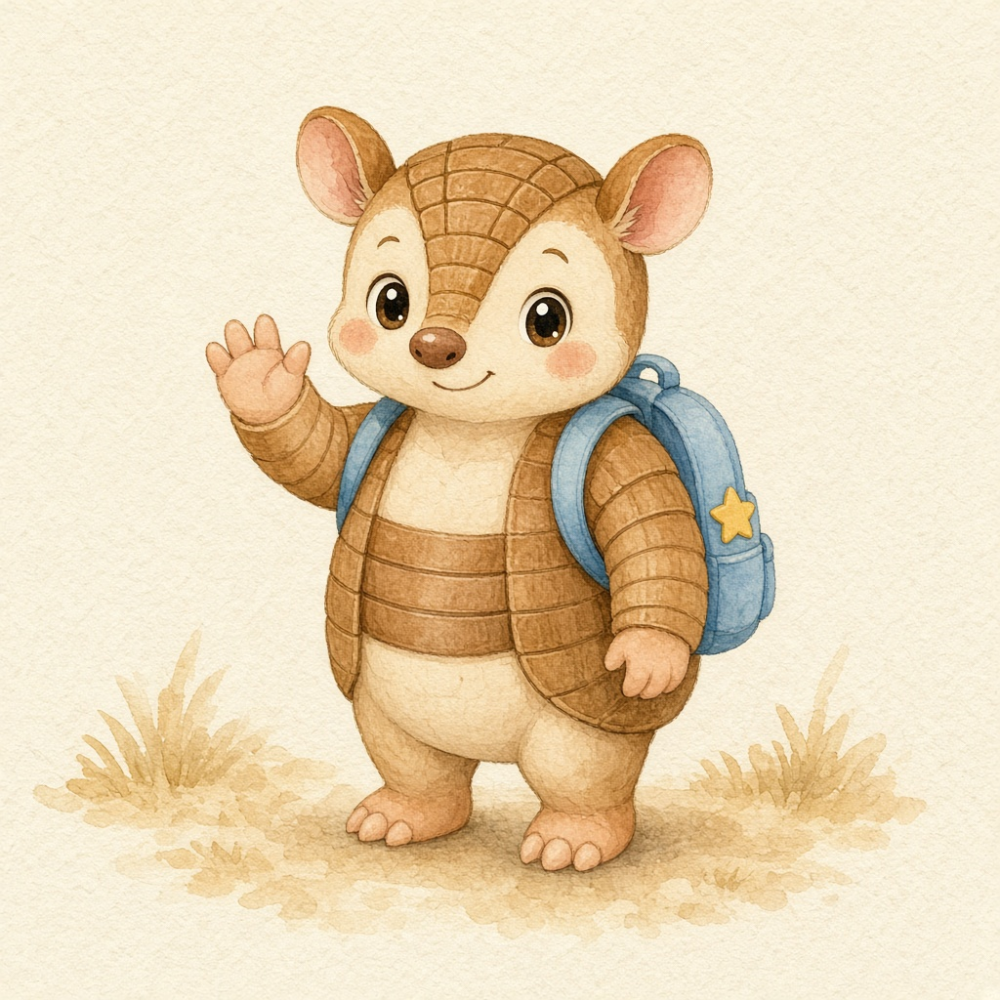
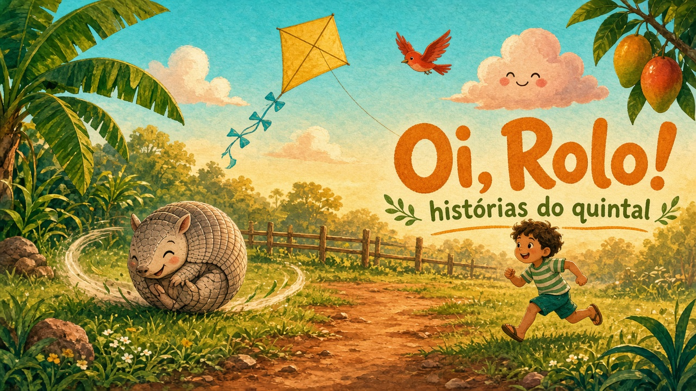
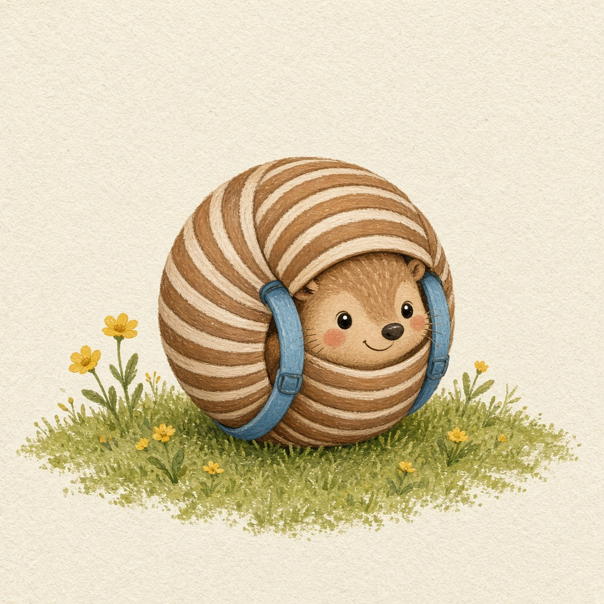
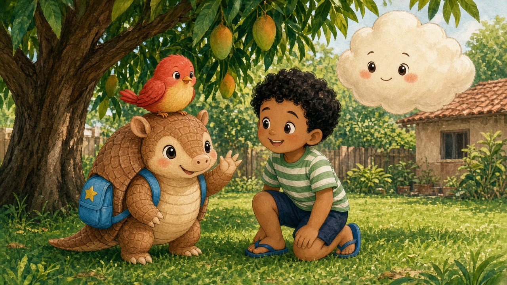
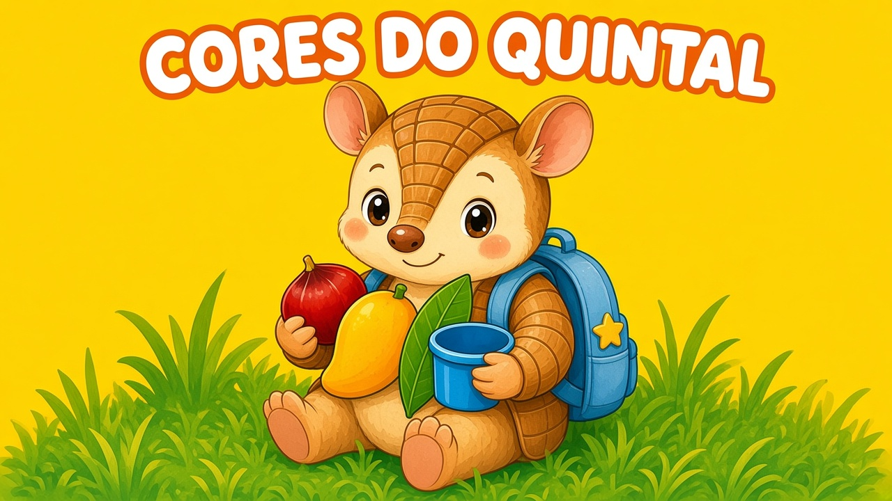
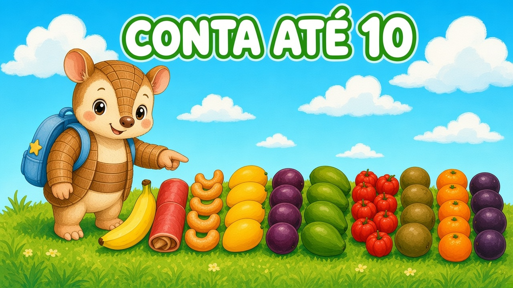
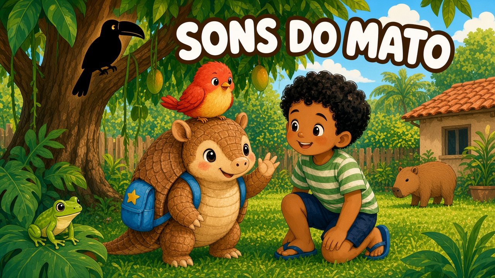

Rolo
Tatu-bola criança. Quando se empolga, vira bolinha e rola até a próxima descoberta.

Rolo é um tatu-bola curioso que mora num quintal brasileiro. A gente pegou só o formato que as crianças gostam — vídeo curto, um tema por vez, música fácil de repetir — e inventou personagem, mundo, desenhos e letras do zero.

Tatu-bola criança. Quando se empolga, vira bolinha e rola até a próxima descoberta.

É a assinatura visual do canal: Rolo se enrola e a câmera acompanha o giro.

Pitanga canta. Juca é o menino da casa. Nena é a nuvem do tempo.

Manga amarela, pitanga vermelha, folha verde, balde azul. Episódio pronto para gravar.

Frutas brasileiras na cerca: banana, caju, pitanga… até dez.

Quem fez esse som? Sabiá, sapo, capivara e o próprio Rolo rolando.
Este kit não publica sozinho no YouTube. Ele entrega marca, desenhos, roteiros e um episódio em slides para você narrar (ou usar a voz do navegador) e gravar a tela.